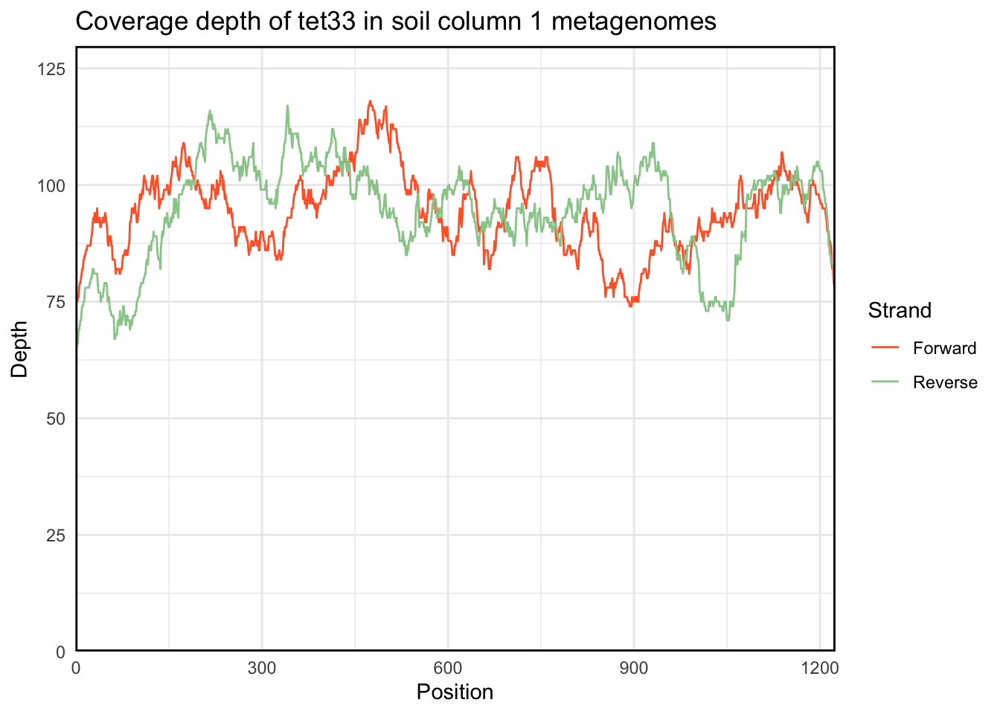
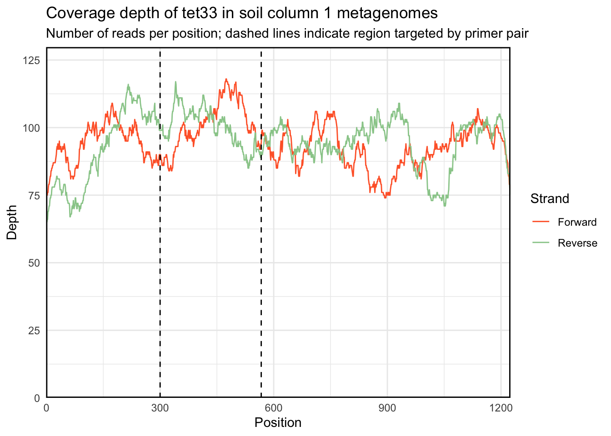

The data we’re working with is output from using BLAST against a single gene, where the queries are the metagenomes we’re interested in. Assuming you used BLAST with -outfmt 6, extract the sstart and send columns from the blast_results file and save them to a new file by:
cut -f 9,10 blast_results > regions_hit.tsvYour file should look like this:
head data/tet33.regions_hit.tsv## 969 820
## 161 12
## 46 103
## 923 1066
## 722 573
## 293 144
## 327 178
## 173 24
## 861 745
## 1005 856Then read the data into a dataframe with:
library(tidyverse)
regions_hit <- read.delim("data/tet33.regions_hit.tsv",
col.names = c("sstart", "send")) %>%
mutate(forward = ifelse(sstart > send, 0, 1))
head(regions_hit)## sstart send forward
## 1 161 12 0
## 2 46 103 1
## 3 923 1066 1
## 4 722 573 0
## 5 293 144 0
## 6 327 178 0The mutate statement above adds an extra column indicating whether or not the match was on the reverse strand.
Now for the function itself:
plot.coverage <- function(regions_hit.df, roi = NULL){
library(IRanges)
library(ggplot2)
x.min = min(regions_hit.df[, 1:2])
x.max = max(regions_hit.df[, 1:2])
forward_hits <- regions_hit.df[regions_hit.df$forward == 1, ]
forward_hits.IR = IRanges(start = forward_hits[, 1],
end = forward_hits[, 2])
forward_hits.cov <- coverage(forward_hits.IR)
forward_coverage <- data.frame(pos = seq(x.min, x.max),
cov = unlist(mapply(rep, forward_hits.cov@values, forward_hits.cov@lengths)),
forward = as.factor(rep(1, x.max))
)
reverse_hits <- regions_hit.df[regions_hit.df$forward == 0, ]
reverse_hits.IR = IRanges(start = reverse_hits[, 2],
end = reverse_hits[, 1])
reverse_hits.cov <- coverage(reverse_hits.IR)
reverse_coverage <- data.frame(pos = seq(x.min, x.max),
cov = unlist(mapply(rep, reverse_hits.cov@values, reverse_hits.cov@lengths)),
forward = as.factor(rep(0, x.max))
)
total_coverage <- rbind(forward_coverage, reverse_coverage)
y.max <-max(total_coverage$cov)
p <- ggplot(total_coverage, aes(x = pos, y = cov, color = forward)) +
geom_line() +
geom_hline(yintercept = 0) +
scale_x_continuous(expand = c(0, x.min), limits = c(0, x.max)) +
scale_y_continuous(expand = c(0, 0), limits = c(0, y.max * 1.1)) +
labs(x = "Position",
y = "Depth",
title = "Coverage depth of...",
color = "Strand") +
scale_color_manual(labels = c("Forward", "Reverse"),
values = c("#FF6633", "#99CC99")) +
theme_minimal() +
theme(panel.border = element_rect(color = "black", fill = NA, size = 1))
if (!missing(roi)){
p <- p + geom_vline(xintercept = roi, linetype = "dashed")
}
return(p)
}The plot.coverage function takes as input a dataframe with columns indicating the start, end, and whether or not we’re on the forward or reverse strand. For example:
plot.coverage(regions_hit)plot.coverage returns a ggplot object, so you can make any modifications you’d like to the graph in the usual way:
plot.coverage(regions_hit) +
labs(title = "Coverage depth of tet33 in soil column 1 metagenomes")
Additionally, plot.coverage takes an optional roi parameter to indiciate a region of interest:
plot.coverage(regions_hit, c(300, 567)) +
labs(title = "Coverage depth of tet33 in soil column 1 metagenomes",
subtitle = "Number of reads per position; dashed lines indicate region targeted by primer pair")
In the future, I will rewrite the function to use data.table and add an optional argument to separate the forward and reverse reads across the \(x\) axis.
Paul Villanueva
Ph.D. Student - Bioinformatics and Computational Biology
Iowa State University, Ames, IA.